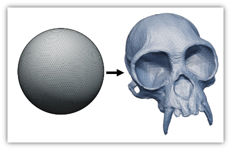

Computer graphics researcher + programmer + gamedev.
Interests
- 3D face modeling

- 3D shape reconstruction & manipulation
- Computational methods for caricature generation
- Video game development
- MIDI music
Activity
- 2014 – 2018: GPos (Gamemakers in POSTECH) member.
- 2015 – 2016: PoApper member.
- 2016: Internship at Innowireless.
- 2018: B.S. in computer science. POSTECH.
- 2018 – 2019: Internship at Microsoft Research Asia (internet graphics group).
- 2018 – Now: Ph.D. student in POSTECH Computer Graphics Lab.
- 2021 SIGGRAPH Asia Student Volunteer Subcommittee
- 2022 SIGGRAPH Asia Student Volunteer Program Co-Chair
Publications
-

Yucheol Jung*, Hyomin Kim*, Gyeongha Hwang, Seung-Hwan Baek, Seungyong Lee, Mesh Density Adaptation for Template-based Shape Reconstruction, SIGGRAPH 2023.
*Equal contributaion
[Project Page] [ArXiv] [GitHub]
-
Yucheol Jung*, Hyomin Kim*, Gyeongha Hwang, Seung-Hwan Baek, Seungyong Lee, Mesh Density Adaptation for Template-based Shape Reconstruction, SIGGRAPH 2023.
*Equal contributaion
[Project Page] [ArXiv] [GitHub]
Projects
Project 1 Title
Project 1 description. Link to project repository or website.
Project 2 Title
Project 2 description. Link to project repository or website.